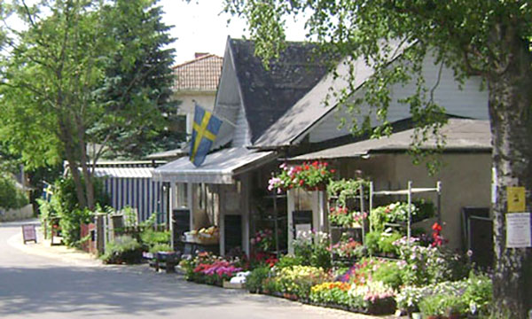

Välkommen till Gretas Blommor!
Obs! Detta är ingen riktig butik, utan endast ett exempel i en kurs i webbteknik.
En modern blomsterbutik med gemytlig atmosfär. Den anrika butiken Gretas Blommor har funnits sedan 1947, men har nu nyrenoverade fina lokaler.
Vi är måna om våra kunder och i butiken hjälper vår trevliga personal gärna till. Nu finns vi också på webben och du kan här beställa blommor för hemleverans.
Butiken har öppet:
- mån-fre: kl. 10-20
- lör: kl. 11-17
- sön: kl. 11-15
Vår webbutik är öppen dygnet runt alla dagar.
Du hittar oss vid infarten till Skogskyrkogården med lättillgänglig parkering intill väg A1. Vi har ett stort urval av buketter och kransar.